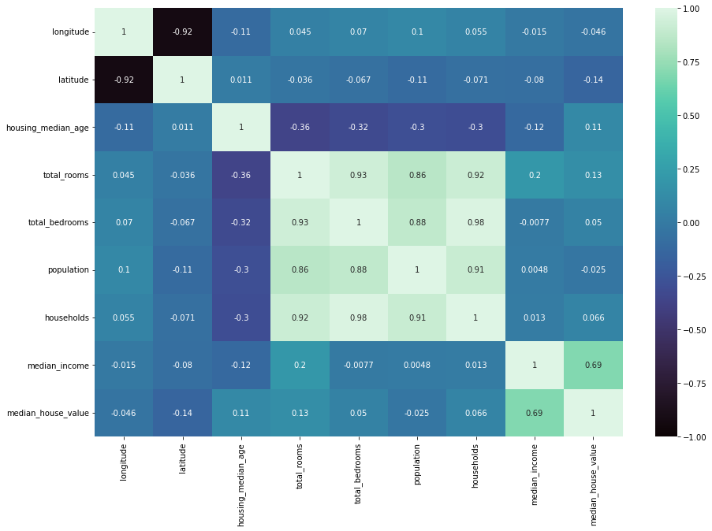
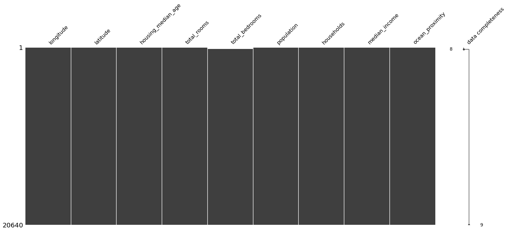
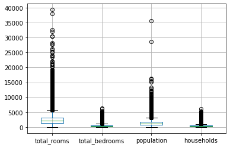
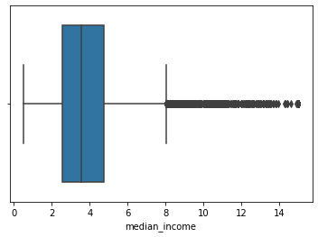
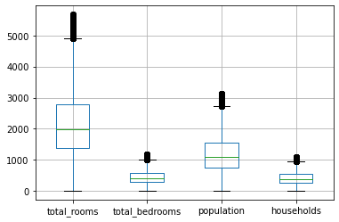
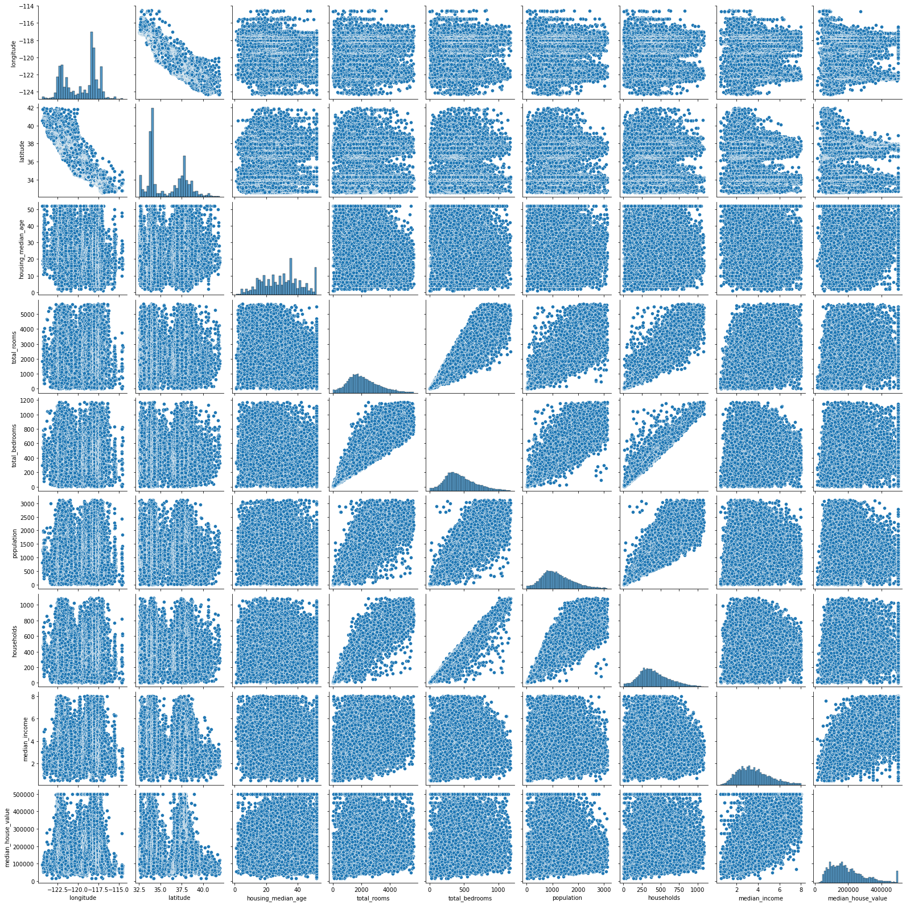
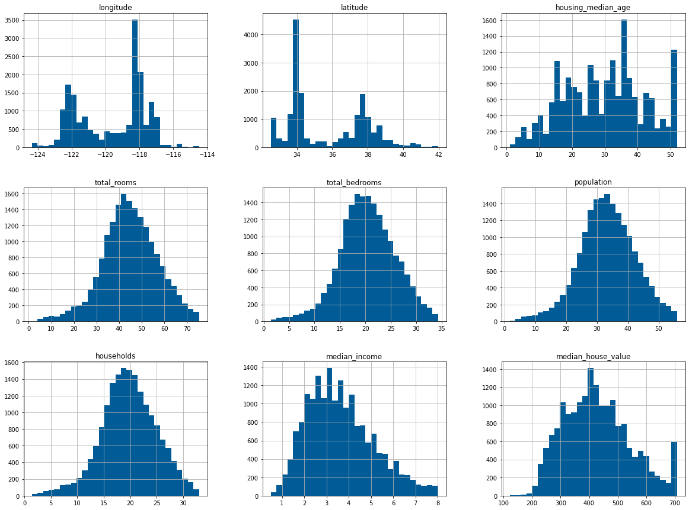

# helper packages
import pandas as pd
import numpy as np
import seaborn as sns
import matplotlib.pyplot as plt
import missingno as msno
import pickle
%matplotlib inline
import sklearn
from sklearn.feature_selection import VarianceThreshold
from sklearn.compose import TransformedTargetRegressor
from sklearn.compose import ColumnTransformer
from sklearn.compose import make_column_selector as selector
from sklearn.preprocessing import PowerTransformer
from sklearn.preprocessing import StandardScaler
from sklearn.preprocessing import OneHotEncoder
from sklearn.preprocessing import LabelEncoder
from sklearn.impute import SimpleImputer
from sklearn.impute import KNNImputer
from sklearn.feature_selection import VarianceThreshold
from sklearn.decomposition import PCA
import statsmodels.api as sm
import statsmodels.formula.api as smf
from sklearn.feature_selection import SelectKBest, f_regression
from sklearn.feature_selection import mutual_info_regressionCalifornia Housing Prices - Regression
In this assignment we applied regression models to predict housing prices ### Features: - longitude: A measure of how far west a house is; a higher value is farther west - latitude: A measure of how far north a house is; a higher value is farther north - housing_median_age: Median age of a house within a block; a lower number is a newer building - total_rooms: Total number of rooms within a block - total_bedrooms: Total number of bedrooms within a block - population: Total number of people residing within a block - households: Total number of households, a group of people residing within a home unit, for a block - median_income: Median income for households within a block of houses (measured in tens of thousands of US Dollars) - ocean_proximity: Location of the house w.r.t ocean/sea ### Target variable: median_house_value: Median house value for households within a block (measured in US Dollars) # Feature Engineering and Selection ## Prerequisite
Cali dataset
# read california housing dataset
cali = pd.read_csv("../data/housing.csv")
# show dimensions
cali.shape(20640, 10)# show data types and other details in the dataset
cali.info()<class 'pandas.core.frame.DataFrame'>
RangeIndex: 20640 entries, 0 to 20639
Data columns (total 10 columns):
# Column Non-Null Count Dtype
--- ------ -------------- -----
0 longitude 20640 non-null float64
1 latitude 20640 non-null float64
2 housing_median_age 20640 non-null float64
3 total_rooms 20640 non-null float64
4 total_bedrooms 20433 non-null float64
5 population 20640 non-null float64
6 households 20640 non-null float64
7 median_income 20640 non-null float64
8 median_house_value 20640 non-null float64
9 ocean_proximity 20640 non-null object
dtypes: float64(9), object(1)
memory usage: 1.6+ MB# show 20 random rows
cali.sample(20)| longitude | latitude | housing_median_age | total_rooms | total_bedrooms | population | households | median_income | median_house_value | ocean_proximity | |
|---|---|---|---|---|---|---|---|---|---|---|
| 11525 | -118.05 | 33.72 | 22.0 | 5416.0 | 1271.0 | 2260.0 | 1184.0 | 3.8038 | 174500.0 | <1H OCEAN |
| 5015 | -118.32 | 34.00 | 50.0 | 2189.0 | 460.0 | 1097.0 | 469.0 | 2.4583 | 120900.0 | <1H OCEAN |
| 18391 | -121.87 | 37.27 | 16.0 | 3298.0 | 451.0 | 1542.0 | 423.0 | 6.7064 | 305600.0 | <1H OCEAN |
| 13091 | -121.35 | 38.56 | 16.0 | 2278.0 | 370.0 | 1203.0 | 371.0 | 5.0622 | 132400.0 | INLAND |
| 4912 | -118.27 | 34.01 | 47.0 | 921.0 | 264.0 | 881.0 | 221.0 | 1.4327 | 114100.0 | <1H OCEAN |
| 8886 | -118.51 | 34.03 | 37.0 | 4072.0 | 905.0 | 1468.0 | 923.0 | 3.8571 | 500001.0 | <1H OCEAN |
| 19980 | -119.08 | 36.20 | 30.0 | 1677.0 | 358.0 | 1159.0 | 365.0 | 2.4554 | 61200.0 | INLAND |
| 1476 | -122.04 | 37.96 | 16.0 | 2913.0 | 723.0 | 1705.0 | 693.0 | 2.9097 | 106300.0 | NEAR BAY |
| 12766 | -121.42 | 38.62 | 33.0 | 3171.0 | 832.0 | 1591.0 | 695.0 | 2.0786 | 88600.0 | INLAND |
| 14294 | -117.13 | 32.72 | 43.0 | 2160.0 | 504.0 | 1221.0 | 452.0 | 2.4821 | 140600.0 | NEAR OCEAN |
| 4946 | -118.30 | 34.02 | 27.0 | 2190.0 | 626.0 | 1768.0 | 528.0 | 1.2446 | 103800.0 | <1H OCEAN |
| 4593 | -118.27 | 34.05 | 26.0 | 1164.0 | 674.0 | 1685.0 | 541.0 | 1.5727 | 225000.0 | <1H OCEAN |
| 11233 | -117.96 | 33.82 | 32.0 | 2726.0 | 556.0 | 1513.0 | 531.0 | 3.7917 | 197400.0 | <1H OCEAN |
| 16104 | -122.50 | 37.75 | 45.0 | 1620.0 | NaN | 941.0 | 328.0 | 4.3859 | 270200.0 | NEAR OCEAN |
| 9047 | -118.09 | 34.71 | 5.0 | 5807.0 | 1182.0 | 2602.0 | 1007.0 | 2.4012 | 159400.0 | INLAND |
| 14731 | -117.02 | 32.81 | 27.0 | 1950.0 | 317.0 | 950.0 | 320.0 | 4.0656 | 164000.0 | <1H OCEAN |
| 11664 | -118.03 | 33.85 | 30.0 | 2320.0 | 448.0 | 1434.0 | 452.0 | 4.0865 | 203700.0 | <1H OCEAN |
| 16376 | -121.29 | 38.03 | 7.0 | 2021.0 | 441.0 | 1615.0 | 406.0 | 2.5842 | 111300.0 | INLAND |
| 3568 | -118.58 | 34.23 | 35.0 | 1917.0 | 314.0 | 1019.0 | 340.0 | 4.8929 | 234900.0 | <1H OCEAN |
| 2446 | -119.61 | 36.56 | 34.0 | 1911.0 | 497.0 | 1886.0 | 481.0 | 1.6250 | 53000.0 | INLAND |
# how many null values do we have
cali.isnull().sum()longitude 0
latitude 0
housing_median_age 0
total_rooms 0
total_bedrooms 207
population 0
households 0
median_income 0
median_house_value 0
ocean_proximity 0
dtype: int64# how many duplicated rows do we have
cali.duplicated().sum()0# statistical description of the dataset
cali.describe()| longitude | latitude | housing_median_age | total_rooms | total_bedrooms | population | households | median_income | median_house_value | |
|---|---|---|---|---|---|---|---|---|---|
| count | 20640.000000 | 20640.000000 | 20640.000000 | 20640.000000 | 20433.000000 | 20640.000000 | 20640.000000 | 20640.000000 | 20640.000000 |
| mean | -119.569704 | 35.631861 | 28.639486 | 2635.763081 | 537.870553 | 1425.476744 | 499.539680 | 3.870671 | 206855.816909 |
| std | 2.003532 | 2.135952 | 12.585558 | 2181.615252 | 421.385070 | 1132.462122 | 382.329753 | 1.899822 | 115395.615874 |
| min | -124.350000 | 32.540000 | 1.000000 | 2.000000 | 1.000000 | 3.000000 | 1.000000 | 0.499900 | 14999.000000 |
| 25% | -121.800000 | 33.930000 | 18.000000 | 1447.750000 | 296.000000 | 787.000000 | 280.000000 | 2.563400 | 119600.000000 |
| 50% | -118.490000 | 34.260000 | 29.000000 | 2127.000000 | 435.000000 | 1166.000000 | 409.000000 | 3.534800 | 179700.000000 |
| 75% | -118.010000 | 37.710000 | 37.000000 | 3148.000000 | 647.000000 | 1725.000000 | 605.000000 | 4.743250 | 264725.000000 |
| max | -114.310000 | 41.950000 | 52.000000 | 39320.000000 | 6445.000000 | 35682.000000 | 6082.000000 | 15.000100 | 500001.000000 |
# correlation between features
cali.corr()| longitude | latitude | housing_median_age | total_rooms | total_bedrooms | population | households | median_income | median_house_value | |
|---|---|---|---|---|---|---|---|---|---|
| longitude | 1.000000 | -0.924664 | -0.108197 | 0.044568 | 0.069608 | 0.099773 | 0.055310 | -0.015176 | -0.045967 |
| latitude | -0.924664 | 1.000000 | 0.011173 | -0.036100 | -0.066983 | -0.108785 | -0.071035 | -0.079809 | -0.144160 |
| housing_median_age | -0.108197 | 0.011173 | 1.000000 | -0.361262 | -0.320451 | -0.296244 | -0.302916 | -0.119034 | 0.105623 |
| total_rooms | 0.044568 | -0.036100 | -0.361262 | 1.000000 | 0.930380 | 0.857126 | 0.918484 | 0.198050 | 0.134153 |
| total_bedrooms | 0.069608 | -0.066983 | -0.320451 | 0.930380 | 1.000000 | 0.877747 | 0.979728 | -0.007723 | 0.049686 |
| population | 0.099773 | -0.108785 | -0.296244 | 0.857126 | 0.877747 | 1.000000 | 0.907222 | 0.004834 | -0.024650 |
| households | 0.055310 | -0.071035 | -0.302916 | 0.918484 | 0.979728 | 0.907222 | 1.000000 | 0.013033 | 0.065843 |
| median_income | -0.015176 | -0.079809 | -0.119034 | 0.198050 | -0.007723 | 0.004834 | 0.013033 | 1.000000 | 0.688075 |
| median_house_value | -0.045967 | -0.144160 | 0.105623 | 0.134153 | 0.049686 | -0.024650 | 0.065843 | 0.688075 | 1.000000 |
plt.figure(figsize=(15,10))
sns.heatmap(cali.corr(),cmap='mako', annot=True, vmin=-1, vmax=1)<AxesSubplot:>
Check for non-informative predictors
Feature variance
After testing for feature variace, we could see that there were no constant features, so none were deleted
X = cali.drop('median_house_value',axis = 1)
# remove low variance features
var_thres = VarianceThreshold(threshold=0)
# exception for categorical features
var_thres.fit(X.drop("ocean_proximity", axis=1))
# shows which column is non constant (True)
var_thres.get_support()array([ True, True, True, True, True, True, True, True])Check for imbalanced distributions
Check for factor variable where some levels are very common while others very rare. After using value counts on ocean proximity feature, we can see that ‘NEAR OCEAN’, ‘NEAR BAY’ and ‘ISLAND’ have way lower value counts, in this case we can use Lumping to group them together into one category called ‘OTHER’
# before lumping
cali["ocean_proximity"].value_counts()<1H OCEAN 9136
INLAND 6551
NEAR OCEAN 2658
NEAR BAY 2290
ISLAND 5
Name: ocean_proximity, dtype: int64# replace values 'near ocean' 'near bay' and 'island' with 'other'
cali["ocean_proximity"] = cali["ocean_proximity"].replace(['NEAR OCEAN', 'NEAR BAY', 'ISLAND'], 'OTHER')# after lumping
cali["ocean_proximity"].value_counts()<1H OCEAN 9136
INLAND 6551
OTHER 4953
Name: ocean_proximity, dtype: int64# features
cali2 = cali.dropna()
features = cali2.drop("median_house_value", axis=1)
features = pd.get_dummies(data=features ,drop_first=True)# target variable
target = cali2["median_house_value"]model = sm.OLS(target,features)
fit = model.fit()
fit.summary()| Dep. Variable: | median_house_value | R-squared (uncentered): | 0.913 |
|---|---|---|---|
| Model: | OLS | Adj. R-squared (uncentered): | 0.913 |
| Method: | Least Squares | F-statistic: | 2.148e+04 |
| Date: | Tue, 29 Nov 2022 | Prob (F-statistic): | 0.00 |
| Time: | 03:12:21 | Log-Likelihood: | -2.5689e+05 |
| No. Observations: | 20433 | AIC: | 5.138e+05 |
| Df Residuals: | 20423 | BIC: | 5.139e+05 |
| Df Model: | 10 | ||
| Covariance Type: | nonrobust |
| coef | std err | t | P>|t| | [0.025 | 0.975] | |
|---|---|---|---|---|---|---|
| longitude | -832.4694 | 108.194 | -7.694 | 0.000 | -1044.539 | -620.400 |
| latitude | -2006.4645 | 358.566 | -5.596 | 0.000 | -2709.282 | -1303.647 |
| housing_median_age | 1138.2147 | 43.786 | 25.995 | 0.000 | 1052.391 | 1224.038 |
| total_rooms | -7.0507 | 0.804 | -8.770 | 0.000 | -8.627 | -5.475 |
| total_bedrooms | 79.1725 | 6.930 | 11.425 | 0.000 | 65.590 | 92.755 |
| population | -37.5053 | 1.094 | -34.276 | 0.000 | -39.650 | -35.360 |
| households | 76.9152 | 7.493 | 10.266 | 0.000 | 62.229 | 91.601 |
| median_income | 4.016e+04 | 341.045 | 117.747 | 0.000 | 3.95e+04 | 4.08e+04 |
| ocean_proximity_INLAND | -6.524e+04 | 1411.194 | -46.228 | 0.000 | -6.8e+04 | -6.25e+04 |
| ocean_proximity_OTHER | 1.091e+04 | 1311.875 | 8.316 | 0.000 | 8338.268 | 1.35e+04 |
| Omnibus: | 4884.909 | Durbin-Watson: | 0.966 |
|---|---|---|---|
| Prob(Omnibus): | 0.000 | Jarque-Bera (JB): | 17247.520 |
| Skew: | 1.180 | Prob(JB): | 0.00 |
| Kurtosis: | 6.832 | Cond. No. | 1.32e+04 |
Notes:
[1] R² is computed without centering (uncentered) since the model does not contain a constant.
[2] Standard Errors assume that the covariance matrix of the errors is correctly specified.
[3] The condition number is large, 1.32e+04. This might indicate that there are
strong multicollinearity or other numerical problems.
Check for missingness
Reason for missingness: from the mask it seems that values are missing at random.
msno.matrix(X, labels=True, filter="bottom", sort="ascending", n=50)<AxesSubplot:>
cali[cali['total_bedrooms'].isna()].sample(20)| longitude | latitude | housing_median_age | total_rooms | total_bedrooms | population | households | median_income | median_house_value | ocean_proximity | |
|---|---|---|---|---|---|---|---|---|---|---|
| 19833 | -119.38 | 36.53 | 38.0 | 1281.0 | NaN | 1423.0 | 293.0 | 1.9602 | 51400.0 | INLAND |
| 18246 | -122.08 | 37.39 | 4.0 | 2292.0 | NaN | 1050.0 | 584.0 | 4.8036 | 340000.0 | OTHER |
| 15607 | -116.66 | 32.79 | 13.0 | 843.0 | NaN | 918.0 | 152.0 | 6.2152 | 240600.0 | <1H OCEAN |
| 19559 | -120.98 | 37.60 | 36.0 | 1437.0 | NaN | 1073.0 | 320.0 | 2.1779 | 58400.0 | INLAND |
| 14970 | -117.01 | 32.74 | 31.0 | 3473.0 | NaN | 2098.0 | 677.0 | 2.6973 | 135200.0 | <1H OCEAN |
| 20267 | -119.19 | 34.20 | 18.0 | 3620.0 | NaN | 3171.0 | 779.0 | 3.3409 | 220500.0 | OTHER |
| 14386 | -117.23 | 32.75 | 5.0 | 1824.0 | NaN | 892.0 | 426.0 | 3.4286 | 137500.0 | OTHER |
| 4309 | -118.32 | 34.09 | 44.0 | 2666.0 | NaN | 2297.0 | 726.0 | 1.6760 | 208800.0 | <1H OCEAN |
| 4591 | -118.28 | 34.06 | 42.0 | 2472.0 | NaN | 3795.0 | 1179.0 | 1.2254 | 162500.0 | <1H OCEAN |
| 11351 | -117.91 | 33.76 | 20.0 | 4413.0 | NaN | 4818.0 | 1063.0 | 2.8594 | 215100.0 | <1H OCEAN |
| 2351 | -119.68 | 36.79 | 16.0 | 1551.0 | NaN | 1010.0 | 292.0 | 3.5417 | 71300.0 | INLAND |
| 11096 | -117.87 | 33.83 | 27.0 | 2287.0 | NaN | 1140.0 | 351.0 | 5.6163 | 231000.0 | <1H OCEAN |
| 5216 | -118.25 | 33.94 | 43.0 | 793.0 | NaN | 736.0 | 231.0 | 0.8527 | 90400.0 | <1H OCEAN |
| 7763 | -118.10 | 33.91 | 36.0 | 726.0 | NaN | 490.0 | 130.0 | 3.6389 | 167600.0 | <1H OCEAN |
| 19122 | -122.65 | 38.25 | 23.0 | 4030.0 | NaN | 1852.0 | 778.0 | 3.4020 | 193300.0 | <1H OCEAN |
| 4744 | -118.36 | 34.05 | 45.0 | 2283.0 | NaN | 1093.0 | 475.0 | 2.5658 | 252000.0 | <1H OCEAN |
| 20460 | -118.75 | 34.29 | 17.0 | 5512.0 | NaN | 2734.0 | 814.0 | 6.6073 | 258100.0 | <1H OCEAN |
| 15663 | -122.44 | 37.80 | 52.0 | 3830.0 | NaN | 1310.0 | 963.0 | 3.4801 | 500001.0 | OTHER |
| 9622 | -120.32 | 37.29 | 38.0 | 576.0 | NaN | 478.0 | 112.0 | 2.3382 | 59600.0 | INLAND |
| 20484 | -118.72 | 34.28 | 17.0 | 3051.0 | NaN | 1705.0 | 495.0 | 5.7376 | 218600.0 | <1H OCEAN |
# we drop all missing values
cali = cali.dropna()Check for extreme values
outlier detection
Note that extreme value detection and removal only applies to numerical features. To do it we first plot a boxplot of some feature, if we notice it has outliers we run the outlier removal function
cali.boxplot(["total_rooms", "total_bedrooms", "population", "households"])<AxesSubplot:>
sns.boxplot(x=cali["median_income"])<AxesSubplot:xlabel='median_income'>
outlier removal
for x in ['median_income']:
q75,q25 = np.percentile(cali.loc[:,x],[75,25])
intr_qr = q75-q25
max = q75+(1.5*intr_qr)
min = q25-(1.5*intr_qr)
cali.loc[cali[x] < min,x] = np.nan
cali.loc[cali[x] > max,x] = np.nanfor x in ["total_rooms"]:
q75,q25 = np.percentile(cali.loc[:,x],[75,25])
intr_qr = q75-q25
max = q75+(1.5*intr_qr)
min = q25-(1.5*intr_qr)
cali.loc[cali[x] < min,x] = np.nan
cali.loc[cali[x] > max,x] = np.nanfor x in ["total_bedrooms"]:
q75,q25 = np.percentile(cali.loc[:,x],[75,25])
intr_qr = q75-q25
max = q75+(1.5*intr_qr)
min = q25-(1.5*intr_qr)
cali.loc[cali[x] < min,x] = np.nan
cali.loc[cali[x] > max,x] = np.nanfor x in ["population"]:
q75,q25 = np.percentile(cali.loc[:,x],[75,25])
intr_qr = q75-q25
max = q75+(1.5*intr_qr)
min = q25-(1.5*intr_qr)
cali.loc[cali[x] < min,x] = np.nan
cali.loc[cali[x] > max,x] = np.nanfor x in ["households"]:
q75,q25 = np.percentile(cali.loc[:,x],[75,25])
intr_qr = q75-q25
max = q75+(1.5*intr_qr)
min = q25-(1.5*intr_qr)
cali.loc[cali[x] < min,x] = np.nan
cali.loc[cali[x] > max,x] = np.nan# null values increase since we replaced outliers with NAs
cali.isnull().sum()longitude 0
latitude 0
housing_median_age 0
total_rooms 1290
total_bedrooms 1271
population 1190
households 1210
median_income 670
median_house_value 0
ocean_proximity 0
dtype: int64# now we drop them
cali = cali.dropna(axis = 0)# boxplot after dropping extreme values
cali.boxplot(["total_rooms", "total_bedrooms", "population", "households"])<AxesSubplot:>
Check for skewness
from the following plot we can see there is right skew for the features which we’ll then perform log transformation on - total_rooms - total_bedrooms - population - households - median_income
sns.pairplot(cali, plot_kws=dict());
# log transformation
cali['total_rooms']= np.sqrt(cali.total_rooms)
cali['total_bedrooms']= np.sqrt(cali.total_bedrooms)
cali['population']= np.sqrt(cali.population)
cali['households']= np.sqrt(cali.households)
cali['median_house_value']= np.sqrt(cali.median_house_value)cali.hist(bins = 30, figsize=(20, 15), color = '#005b96');
features = cali.drop("median_house_value", axis=1)
features = pd.get_dummies(data=features ,drop_first=True)
target = cali["median_house_value"]model = sm.OLS(target,features)
fit = model.fit()
fit.summary()| Dep. Variable: | median_house_value | R-squared (uncentered): | 0.976 |
|---|---|---|---|
| Model: | OLS | Adj. R-squared (uncentered): | 0.976 |
| Method: | Least Squares | F-statistic: | 7.407e+04 |
| Date: | Tue, 29 Nov 2022 | Prob (F-statistic): | 0.00 |
| Time: | 03:13:14 | Log-Likelihood: | -1.0154e+05 |
| No. Observations: | 17994 | AIC: | 2.031e+05 |
| Df Residuals: | 17984 | BIC: | 2.032e+05 |
| Df Model: | 10 | ||
| Covariance Type: | nonrobust |
| coef | std err | t | P>|t| | [0.025 | 0.975] | |
|---|---|---|---|---|---|---|
| longitude | -3.3673 | 0.120 | -28.146 | 0.000 | -3.602 | -3.133 |
| latitude | -5.2688 | 0.379 | -13.919 | 0.000 | -6.011 | -4.527 |
| housing_median_age | 1.1075 | 0.046 | 24.174 | 0.000 | 1.018 | 1.197 |
| total_rooms | -3.1268 | 0.160 | -19.543 | 0.000 | -3.440 | -2.813 |
| total_bedrooms | 10.8581 | 0.496 | 21.877 | 0.000 | 9.885 | 11.831 |
| population | -6.0049 | 0.131 | -45.956 | 0.000 | -6.261 | -5.749 |
| households | 6.6374 | 0.489 | 13.576 | 0.000 | 5.679 | 7.596 |
| median_income | 52.4915 | 0.557 | 94.238 | 0.000 | 51.400 | 53.583 |
| ocean_proximity_INLAND | -73.1113 | 1.525 | -47.933 | 0.000 | -76.101 | -70.122 |
| ocean_proximity_OTHER | 2.1711 | 1.381 | 1.572 | 0.116 | -0.536 | 4.878 |
| Omnibus: | 2366.622 | Durbin-Watson: | 1.027 |
|---|---|---|---|
| Prob(Omnibus): | 0.000 | Jarque-Bera (JB): | 6171.857 |
| Skew: | 0.740 | Prob(JB): | 0.00 |
| Kurtosis: | 5.458 | Cond. No. | 493. |
Notes:
[1] R² is computed without centering (uncentered) since the model does not contain a constant.
[2] Standard Errors assume that the covariance matrix of the errors is correctly specified.
Check for redundant features
perform ANOVA test
cali = pd.get_dummies(data=cali,drop_first=True)
# divide features and target
features = cali.drop(['median_house_value'], axis=1)
target = cali["median_house_value"]
# anova test
anova_test = SelectKBest(f_regression, k=6)
anova_test.fit(features, target)
# show results
for i in anova_test.get_support(indices=True):
print(cali.columns[i])latitude
housing_median_age
total_rooms
median_income
median_house_value
ocean_proximity_INLANDMutual information
mutual_information = SelectKBest(mutual_info_regression, k=6)
mutual_information.fit(features, target)
for i in mutual_information.get_support(indices=True):
print(cali.columns[i])longitude
latitude
housing_median_age
median_income
median_house_value
ocean_proximity_INLANDDimension reduction
Using PCA
pca = PCA(n_components=0.99, svd_solver='auto')
pca.fit(features)
PCA(copy=True, iterated_power='auto', n_components=0.99, random_state=None,
svd_solver='auto', tol=0.0, whiten=False)PCA(n_components=0.99)In a Jupyter environment, please rerun this cell to show the HTML representation or trust the notebook.
On GitHub, the HTML representation is unable to render, please try loading this page with nbviewer.org.
PCA(n_components=0.99)
Dummy encoding
# encode categorical variables as numeric using dummy encoding
cali = pd.get_dummies(data=cali,drop_first=True)cali| longitude | latitude | housing_median_age | total_rooms | total_bedrooms | population | households | median_income | median_house_value | ocean_proximity_INLAND | ocean_proximity_OTHER | |
|---|---|---|---|---|---|---|---|---|---|---|---|
| 2 | -122.24 | 37.85 | 52.0 | 38.301436 | 13.784049 | 22.271057 | 13.304135 | 7.2574 | 593.380148 | 0 | 1 |
| 3 | -122.25 | 37.85 | 52.0 | 35.693137 | 15.329710 | 23.622024 | 14.798649 | 5.6431 | 584.208867 | 0 | 1 |
| 4 | -122.25 | 37.85 | 52.0 | 40.336088 | 16.733201 | 23.769729 | 16.093477 | 3.8462 | 584.978632 | 0 | 1 |
| 5 | -122.25 | 37.85 | 52.0 | 30.315013 | 14.594520 | 20.322401 | 13.892444 | 4.0368 | 519.326487 | 0 | 1 |
| 6 | -122.25 | 37.84 | 52.0 | 50.348784 | 22.113344 | 33.075671 | 22.671568 | 3.6591 | 546.991773 | 0 | 1 |
| ... | ... | ... | ... | ... | ... | ... | ... | ... | ... | ... | ... |
| 20635 | -121.09 | 39.48 | 25.0 | 40.804412 | 19.339080 | 29.068884 | 18.165902 | 1.5603 | 279.463772 | 1 | 0 |
| 20636 | -121.21 | 39.49 | 18.0 | 26.400758 | 12.247449 | 18.867962 | 10.677078 | 2.5568 | 277.668868 | 1 | 0 |
| 20637 | -121.22 | 39.43 | 17.0 | 47.476310 | 22.022716 | 31.733263 | 20.808652 | 1.7000 | 303.809151 | 1 | 0 |
| 20638 | -121.32 | 39.43 | 18.0 | 43.127717 | 20.223748 | 27.221315 | 18.681542 | 1.8672 | 291.032644 | 1 | 0 |
| 20639 | -121.24 | 39.37 | 16.0 | 52.773099 | 24.819347 | 37.242449 | 23.021729 | 2.3886 | 298.998328 | 1 | 0 |
17994 rows × 11 columns
Save cleaned Data
cali.to_pickle("../data/main_data.pkl")